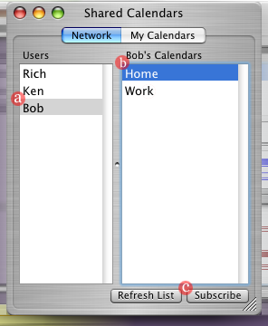
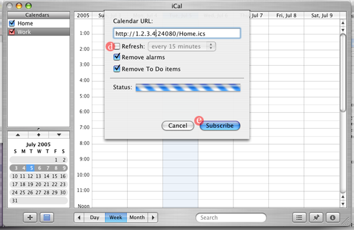
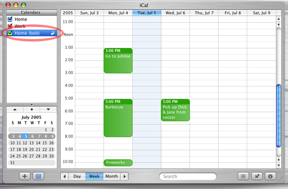
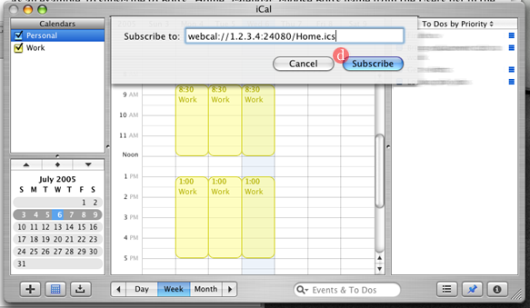
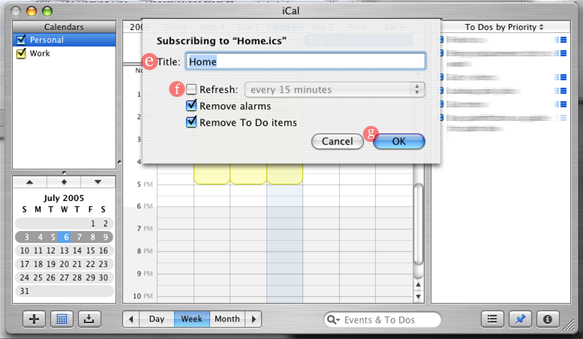
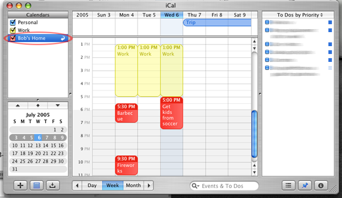
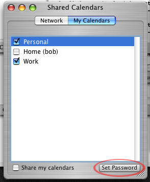
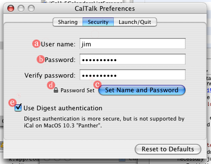
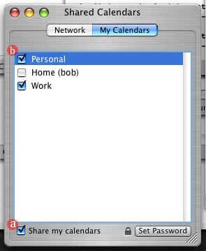
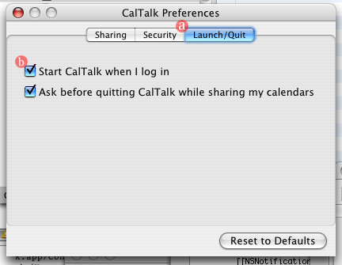

Some of these instructions will be specific to . To get instructions for a different MacOS version, click one of the following links: OS 10.3 "Panther" OS 10.4 "Tiger"
iCal has built-in support for publishing and subscribing to calendars over a network. However, this support usually requires either buying a .Mac subscription or setting up a WebDAV server. For small networks, CalTalk simplifies iCal calendar sharing by sharing your iCal calendars right from your own computer. CalTalk also lets you browse and subscribe to other CalTalk users' calendars similarly to how you browse iTunes playlists and iPhoto albums. To get started using CalTalk on a network, follow these steps:
CalTalk installs like most Mac software; open the disk image, drag CalTalk onto your hard drive or a public folder on your network, and you're good to go.
Launch CalTalk, and you will be greeted with the main window:

The window has two tabs, the "Network" tab for browsing and subscribing to other people's calendars and
the "My Calendars" tab for managing the sharing of your own calendars. When you first open CalTalk, the
window will be open to the Network tab shown above. The names of all the users running CalTalk on your
local network will appear in the left half of the window. Clicking a user's name will display their shared
calendars in the right half, and double-clicking one of those calendars' names will subscribe to it in iCal.
As an example, to subscribe to Bob's "Home" calendar, choose Bob's name from the Users list in the left
half of the window (a), pick "Home" from the "Bob's Calendars" list in the right half (b), and click
the "Subscribe" button (c). iCal will open to confirm the subscription:

Check the "Refresh every 15 minutes" box (d) so that iCal will keep the calendar up to date automatically,
then click the "Subscribe" button (e) to confirm. The calendar, named "Home (bob)", will now
appear in iCal's Calendars list:


Click the "Subscribe" button (d) to confirm. Another sheet will appear:

Give the calendar a descriptive name (e), such as "Bob's Home", and check the "Refresh
every 15 minutes" box (f) so that iCal will keep the calendar up to date automatically. Press "OK" (g),
and the "Bob's Home" calendar will appear in iCal's Calendars list:

Repeat for every calendar you want to subscribe to. If a user has put a password on their calendars, you will
be prompted for that password before listing or subscribing to them.
If you do not want to share your own calendars, you're done! None of the following steps are necessary just to browse with CalTalk.
To limit access to your shared calendars on the network, you may want to require a password to access
them. A "Set Password" button is provided under the "My Calendars" tab for this purpose:

Press the button, and you will be taken to the Security section of CalTalk's preferences:

Type your user name into the "User name" box (a), then type your password twice into the two "Password" boxes
(b). After this is done, press the "Set Name and Password" button (c). A lock icon will appear to indicate
that your password has been successfully set (d). Note that the contents of the password boxes may appear to
change as soon as you press the "Set Name and Password" button; to protect your password, CalTalk replaces the
boxes' contents with a random string as soon as it has been saved.
Once your password has been set, you will need to decide whether you want to protect your calendars using digest authentication. Digest authentication provides added security by encrypting your password when it is sent over the network; unfortunately, the version of iCal included with MacOS 10.3 "Panther" cannot subscribe to calendars protected with digest authentication. If all of the computers you will be sharing calendars with are using MacOS 10.4 "Tiger" or higher, make sure the "Use Digest authentication" checkbox (e) is checked. If you have to maintain compatibility with machines running Panther, uncheck the box. Be aware that if other users on your network snoop on your network traffic, they will be able to read your password.
To make your own calendars available on the network, go to the main window's "My Calendars" tab:

Check the "Share my calendars" box (a) to start sharing your calendars, then check the boxes next to the
names of your calendars (b) that you want to make public. Your name and calendars will now appear for other
CalTalk users to browse and subscribe to. Note that you must leave CalTalk running for other users
to continue to be able to see your calendars. You may close the CalTalk window while sharing calendars;
CalTalk will remain running in the background until you choose the "Quit CalTalk" menu item from the CalTalk
menu. To open the Calendars window again after it has been closed, click on CalTalk's dock icon.
If you share your calendars with CalTalk, you'll want it to run every time you log into your computer
so that other users can subscribe to your calendars and keep them up to date. Choose "Preferences" from
the "CalTalk" menu, go to the "Launch/Quit" tab (a), and check the "Start CalTalk when I log in" box (b):

The setting will immediately take effect; there is no need to click an "OK" or "Apply" button.
If you still have problems or questions about CalTalk, please email the author.